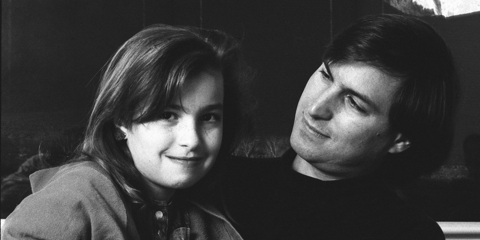
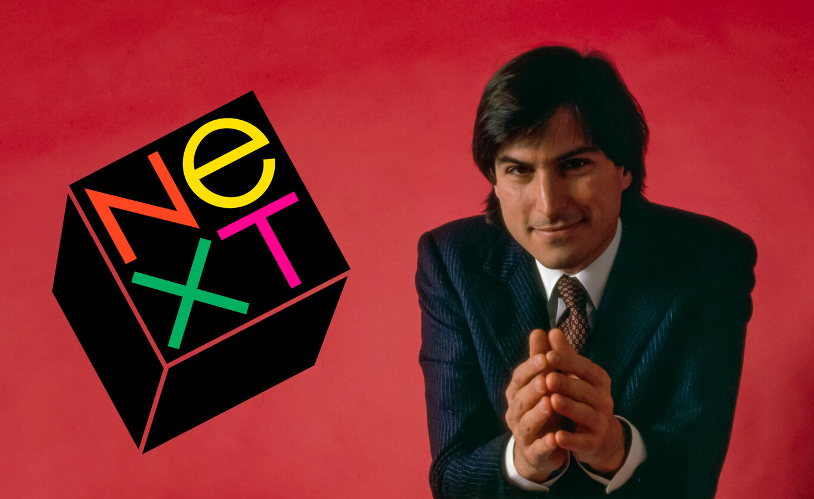
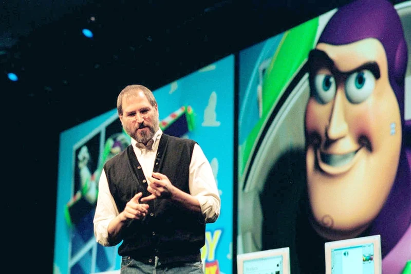
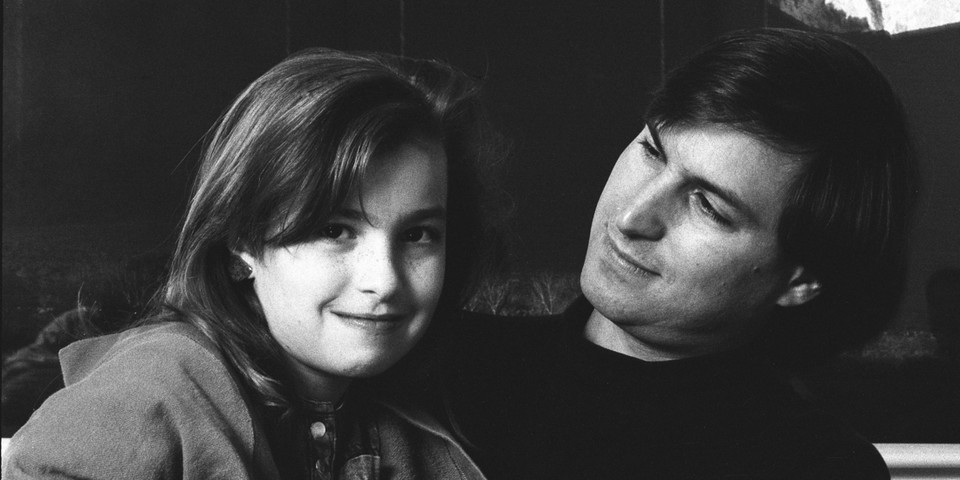
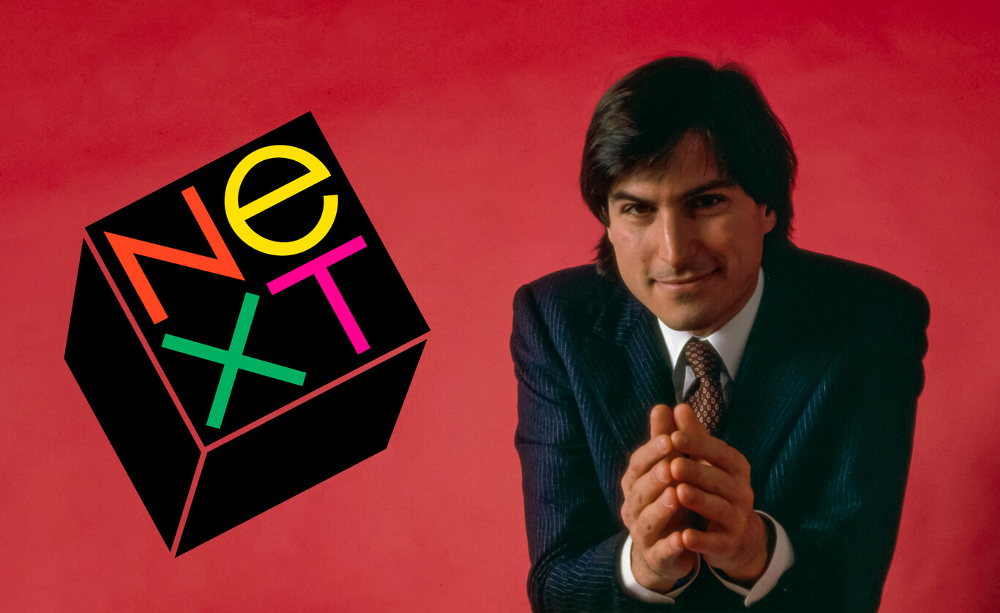
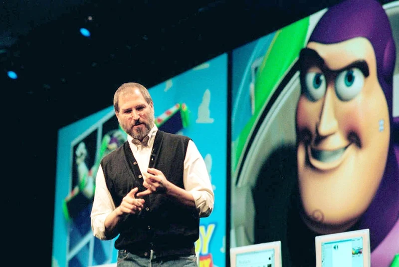

Wie was Jobs buiten Apple?
 





Steve Jobs was een fascinerende figuur, ook buiten zijn werk bij Apple. Hij was mede-oprichter van Pixar Animation Studios, waar hij bijdroeg aan de ontwikkeling van computeranimatie in films. Pixar werd uiteindelijk een groot succes en maakte baanbrekende films als Toy Story. Later verkocht Jobs Pixar aan Disney, wat hem een belangrijke aandeelhouder en bestuurslid bij Disney maakte. Jobs had vier kinderen. Hij kreeg een dochter, Lisa Brennan-Jobs, met zijn eerste partner, Chrisann Brennan. Hun relatie was in het begin complex: Jobs ontkende aanvankelijk zijn vaderschap, maar later herstelden ze hun band. Met zijn vrouw Laurene Powell-Jobs, met wie hij trouwde in 1991, had hij drie kinderen: Reed, Erin, en Eve. Hoewel Jobs privé soms een afstandelijke vader werd genoemd, was hij trots op zijn kinderen en stond hij bekend om zijn diepgewortelde liefde voor hen.